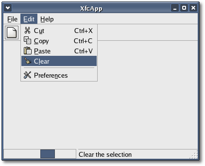

|
Chapter
6: Adding a statusbar
In this chapter we add an instance of the statusbar widget created in
the previous chapter to XfcApp, and we add a function that will
display an
action's tooltip in the statusbar on menu item selection.
First, to the XfcApp header file we need to add an include statement
for the statusbar header file:
#include "statusbar.hh"
and in the XfcApp class declaration we need to add a private Statusbar
pointer:
Statusbar
*statusbar;
The pointer is not a smart
pointer because if you remember, widgets are created with a floating
reference. When you
add a widget to a container the container references the widget and
clears its floating reference. As long as you hold onto a reference to
the container you don't need to hold onto a reference to any its
children.
Next, we need to add the following function slot which will be called
by
Gtk::UIManager to link the display of an action's tooltip in the
statusbar to menu item selection and deselection.
void
install_menu_hints(Gtk::Action& action, Gtk::Widget& widget);
The XfcApp header file <xfcapp.hh> should now look like
this:
#include <xfc/main.hh>
#include <xfc/gtk/window.hh>
#include <xfc/gtk/uimanager.hh>
#include "statusbar.hh"
using namespace Xfc;
class XfcApp : public Gtk::Window
{
Pointer<Gtk::ActionGroup> action_group;
Pointer<Gtk::UIManager> manager;
Statusbar *statusbar_;
void add_actions();
void install_menu_hints(Gtk::Action& action,
Gtk::Widget& widget);
public:
XfcApp();
virtual ~XfcApp();
void on_file_new();
void on_file_open();
void on_file_save();
void on_file_save_as();
void on_file_quit();
void on_edit_cut();
void on_edit_copy();
void on_edit_paste();
void on_edit_clear();
void on_edit_preferences();
void on_help_about();
};
To the XfcApp constructor in <xfcapp.cc> we need to add
the following line:
manager->signal_connect_proxy().connect(sigc::mem_fun(this,
&XfcApp::install_menu_hints));
This connects the Gtk::UIManager's "connect_proxy" signal to our
install_menu_hints() function. The "connect_proxy" signal is emitted
each
time an action is associated with a proxy widget, be it a widget added
by you or a widget created by the Gtk::UIManager.
Next, we need to create a Statusbar instance and add it to main_vbox:
statusbar = new Statusbar(true);
main_vbox->pack_end(*statusbar, false);
statusbar->show();
The statusbar must be created before we load the XML description so
that Gtk::UIManager can link each action's
tooltip to our statusbar instance when it calls install_menu_hints().
void
XfcApp::install_menu_hints(Gtk::Action& action, Gtk::Widget&
widget)
{
using namespace sigc;
if (!widget.is_a(GTK_TYPE_MENU_ITEM))
return;
Gtk::MenuItem& item =
static_cast<Gtk::MenuItem&>(widget);
String tooltip = action.property_tooltip();
item.signal_select().connect(bind(mem_fun(statusbar,
&Statusbar::push), tooltip));
item.signal_deselect().connect(mem_fun(statusbar,
&Statusbar::pop));
}
First install_menu_hints() opens the 'sigc::' namespace so libsigc++
function calls don't need to be prefixed with sigc::. Then it checks to
see that the the widget being
linked is a menu item. If it is, it retrieves the tooltip text and
binds the text to the statusbar's push() function, and connects this
function
to the menu item's "select" signal. It also connects the statusbar's
pop()
function to the menu item's "deselect" signal. Now, whenever a menu
item is
selected its tooltip will be displayed in our statusbar, and when it is
deselected it will be removed.
The XfcApp source file <xfcapp.cc> should now look like
this:
#include "xfcapp.hh"
#include "xfcapp.ui"
#include <xfc/gtk/accelgroup.hh>
#include <xfc/gtk/box.hh>
#include <xfc/gtk/menubar.hh>
#include <xfc/gtk/stock.hh>
#include <xfc/gtk/toolbar.hh>
#include <xfc/glib/error.hh>
#include <gconf/gconf-client.h>
#include <iostream>
XfcApp::XfcApp()
{
// Set the window title and default size
set_title("XfcApp");
set_default_size(400, 300);
// Create the action group and add the actions
action_group = new Gtk::ActionGroup("XfcAppActions");
add_actions();
// Create the user interface manager and insert the
action group
manager = new Gtk::UIManager;
manager->insert_action_group(*action_group);
manager->signal_connect_proxy().connect(sigc::mem_fun(this,
&XfcApp::install_menu_hints));
// Associate the user interface manager's AccelGroup
with the window
add_accel_group(manager->get_accel_group());
// Create main vertical box and add to
window
Gtk::VBox *main_vbox = new Gtk::VBox;
add(*main_vbox);
// Create custom statusbar (before loading XML
description) and pack it at the end of main_vbox
statusbar = new Statusbar(true);
main_vbox->pack_end(*statusbar, false);
statusbar->show();
// Load XML description of the menus and toolbar
from a definition string.
G::Error error;
if (!manager->add_ui_from_string(ui_info, -1,
&error))
{
std::cout << "building
menus and toolbar failed: << " << error.message() <<
std::endl;
}
// Get a pointer to the menubar and pack it into
main_vbox
Gtk::Widget *menubar =
manager->get_widget("/MenuBar");
main_vbox->pack_start(*menubar,
false);
menubar->show();
// Get a pointer to the toolbar and pack it into
main_vbox
Gtk::Toolbar *toolbar =
static_cast<Gtk::Toolbar*>(manager->get_widget("/ToolBar"));
toolbar->set_tooltips(true);
main_vbox->pack_start(*toolbar, false);
toolbar->show();
// Use the GNOME value for 'toolbar_style' to place
the progress bar.
GConfClient *client = gconf_client_get_default();
String text = gconf_client_get_string(client,
"/desktop/gnome/interface/toolbar_style", 0);
Gtk::ToolbarStyle toolbar_style;
if (text.compare("text") == 0)
toolbar_style = Gtk::TOOLBAR_TEXT;
else if (text.compare("both") == 0)
toolbar_style = Gtk::TOOLBAR_BOTH;
else if (text.compare("both_horiz") == 0)
toolbar_style =
Gtk::TOOLBAR_BOTH_HORIZ;
else
toolbar_style =
Gtk::TOOLBAR_ICONS;
toolbar->set_style(toolbar_style);
// Show main_vbox so it's visible
main_vbox->show();
// As an example, set the progress bar to
pulse
statusbar_->begin_progress(100, true);
}
XfcApp::~XfcApp()
{
statusbar_->end_progress();
}
void
XfcApp::add_actions()
{
using namespace Gtk;
using namespace sigc;
action_group->add("FileMenu", "_File");
action_group->add("EditMenu", "_Edit");
action_group->add("HelpMenu", "_Help");
Action *action = action_group->add("New", "_New",
StockId::NEW, AccelKey("<control>N"), "Create a new
file");
action->signal_activate().connect(mem_fun(this,
&XfcApp::on_file_new));
action = action_group->add("Open", "_Open",
StockId::OPEN, AccelKey("<control>O"), "Open a
file");
action->signal_activate().connect(mem_fun(this,
&XfcApp::on_file_open));
action = action_group->add("Save", "_Save",
StockId::SAVE, AccelKey("<control>S"), "Save current
file");
action->signal_activate().connect(mem_fun(this,
&XfcApp::on_file_save));
action = action_group->add("SaveAs", "Save
_As...", StockId::SAVE, "Save to a file");
action->signal_activate().connect(mem_fun(this,
&XfcApp::on_file_save_as));
action = action_group->add("Quit", "_Quit",
StockId::QUIT, AccelKey("<control>Q"), "Quit");
action->signal_activate().connect(mem_fun(this,
&XfcApp::on_file_quit));
action = action_group->add("Cut", "C_ut",
StockId::CUT, AccelKey("<control>X"), "Cut the
selection");
action->signal_activate().connect(mem_fun(this,
&XfcApp::on_edit_cut));
action = action_group->add("Copy", "_Copy",
StockId::COPY, AccelKey("<control>C"), "Copy the selection");
action->signal_activate().connect(mem_fun(this,
&XfcApp::on_edit_copy));
action = action_group->add("Paste", "_Paste",
StockId::PASTE, AccelKey("<control>V"), "Paste the clipboard");
action->signal_activate().connect(mem_fun(this,
&XfcApp::on_edit_paste));
action = action_group->add("Clear", "C_lear",
StockId::CLEAR, "Clear the selection");
action->signal_activate().connect(mem_fun(this,
&XfcApp::on_edit_clear));
action = action_group->add("Preferences",
"Prefere_nces", StockId::PREFERENCES, "Configure the application");
action->signal_activate().connect(mem_fun(this,
&XfcApp::on_edit_preferences));
action = action_group->add("About", "_About",
AccelKey("<control>A"), "About");
action->signal_activate().connect(mem_fun(this,
&XfcApp::on_help_about));
}
void
XfcApp::install_menu_hints(Gtk::Action& action, Gtk::Widget&
widget)
{
using namespace sigc;
if (!widget.is_a(GTK_TYPE_MENU_ITEM))
return;
Gtk::MenuItem& item =
static_cast<Gtk::MenuItem&>(widget);
String tooltip = action.property_tooltip();
item.signal_select().connect(bind(mem_fun(statusbar,
&Statusbar::push), tooltip));
item.signal_deselect().connect(mem_fun(statusbar,
&Statusbar::pop));
}
void
XfcApp::on_file_new()
{
statusbar->progress_bar()->hide();
std::cout << "You activated action: New"
<< std::endl;
}
void
XfcApp::on_file_open()
{
statusbar->progress_bar()->show();
std::cout << "You activated action: Open"
<< std::endl;
}
void
XfcApp::on_file_save()
{
std::cout << "You activated action: Save"
<< std::endl;
}
void
XfcApp::on_file_save_as()
{
std::cout << "You activated action: SaveAs"
<< std::endl;
}
void
XfcApp::on_file_quit()
{
dispose();
}
void
XfcApp::on_edit_cut()
{
std::cout << "You activated action: Cut"
<< std::endl;
}
void
XfcApp::on_edit_copy()
{
std::cout << "You activated action: Copy"
<< std::endl;
}
void
XfcApp::on_edit_paste()
{
std::cout << "You activated action: Paste"
<< std::endl;
}
void
XfcApp::on_edit_clear()
{
std::cout << "You activated action: Clear"
<< std::endl;
}
void
XfcApp::on_edit_preferences()
{
std::cout << "You activated action:
Preferences" << std::endl;
}
void
XfcApp::on_help_about()
{
std::cout << "You activated action: About"
<< std::endl;
}
int main (int argc, char *argv[])
{
using namespace Main;
init(&argc, &argv);
XfcApp window;
window.signal_destroy().connect(sigc::ptr_fun(&Xfc::Main::quit));
window.show();
run();
return 0;
}
Compiling XfcApp
If you compiled and installed XFC yourself, you will find the source
code for this version of XfcApp in the
<examples/tutorial/chapter06> source directory along with a Makefile. If
XFC came pre-installed, or you installed it from an RPM package, you
will
find the source code in the
</usr/share/doc/xfcui-X.X/examples/tutorial/chapter06> subdirectory. In
this case you will have to create the Makefile yourself (replace X.X
with the
version number of the libXFCui library you have installed).
To create a Makefile for XfcApp, add the following lines to a
new
text file
and save it using the name "Makefile":
CC = g++
CFLAGS = -Wall -O2
xfcapp: xfcapp.cc xfcapp.hh xfcapp.ui statusbar.cc
statusbar.hh
$(CC) xfcapp.cc statusbar.cc -o xfcapp `pkg-config
xfcui-X.X
gconf-2.0 --cflags --libs`
clean:
rm -f *.o xfcapp
If you cut and paste these lines make sure the whitespace before $(CC)
and rm is a tab character. Note the addition of 'gconf-2.0' to the
pkg-config command. This is needed because XfcApp needs to retrieve the
current value of GNOME "toolbar_style" and
"status_bar_meter_on_right" from the GConf database. When
you
compile this version XfcApp you will see the following window appear:

To show that the progress bar works, the last line in the XfcApp
constructor calls Statusbar::begin_progress() with 'activity_mode' set
to true. The XfcApp destructor makes the required call to
Statusbar::end_progress().
In the next chapter we will add a client
area and pop-up context menu to XfcApp.
| Copyright
© 2004-2005 The XFC
Development Team |
Top
|
XFC
4.4
|
|